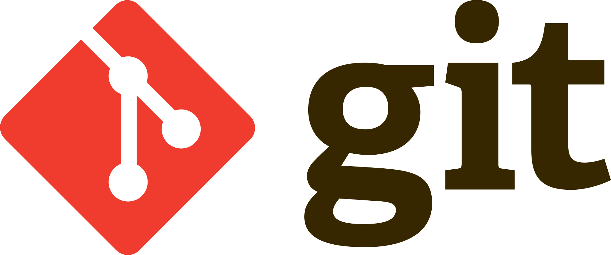
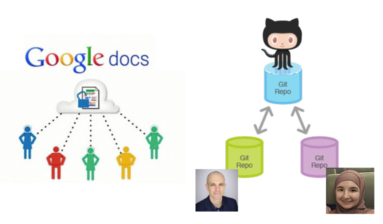
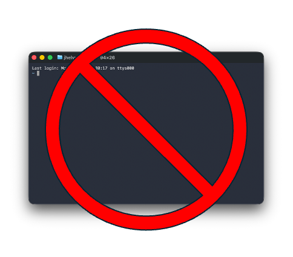
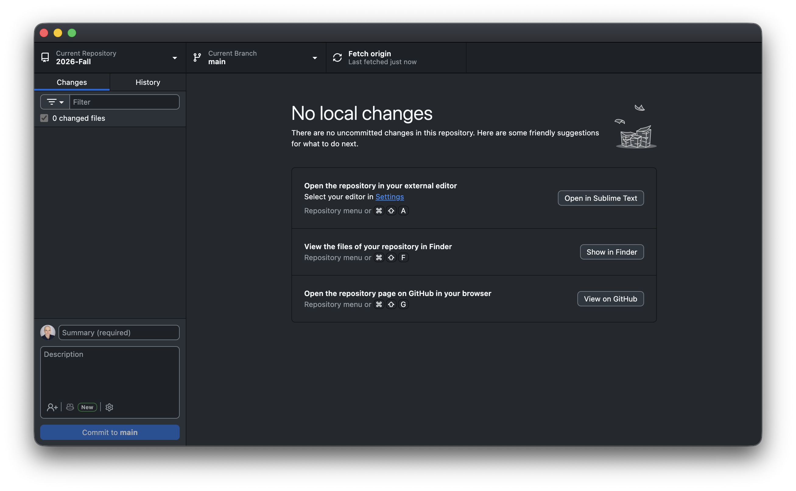
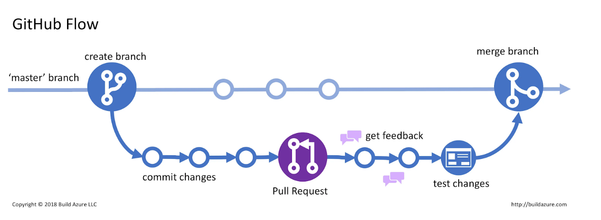
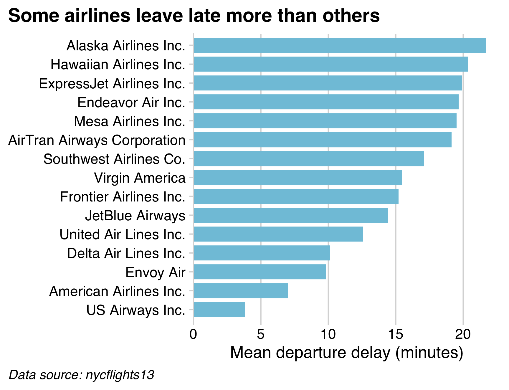

03:00
Agentic Workflows & GitHub
EMSE 4572/6572: Exploratory Data Analysis
John Paul Helveston
September 2, 2026
Week 2: Agentic Workflows & GitHub
1. Version Control with GitHub
2. Setting Up & Using Claude Code
3. Modes & Slash Commands
4. Skills
5. Working Safely
Week 2: Agentic Workflows & GitHub
1. Version Control with GitHub
2. Setting Up & Using Claude Code
3. Modes & Slash Commands
4. Skills
5. Working Safely

VCS = Version Control System
Original domain: software development
Git = The most popular VCS
Our domain: data analysis & agentic workflows
We collaborate using git on github.com

We won’t use git in a terminal
(you can if you want to)

Everything is a button in GitHub Desktop

The github workflow

Git vocabulary you should know
“repo”
A project folder that
tracks its own history
Example: course website: https://github.com/emse-eda-gwu/2026-Fall
“commit”
A labeled save point — “this is a state worth remembering”
“push” / “pull”
Send / recieve your commits up to GitHub
(the cloud copy)
The GitHub Desktop loop
Changes (locally on your computer) → Commit (with a message) → Push
Write commit messages you’d thank yourself for
Useless
stuffupdateasdffixed it
Useful
Add flights bar chartFix airline join dropping NAsClean column names in import
A message is a note to future you — the one scrolling History
trying to find where it broke.
Checkpoint
You already ran the solo loop in HW1 — let’s make sure it stuck.
- In GitHub Desktop, confirm your
eda-practicerepo is there - Open it on GitHub.com — can you see your commit in History?
- Thumbs up once you can see your pushed change online
Missing it, or joined the class late?
Flag me now — grab the steps from HW1 or this 2-min walkthrough
How do I collaborate with others?
Add collaborators in repo settings

Two new moves
“clone”
Make your own local copy
of someone else’s repo
“pull request” (PR)
Propose your changes back
they review, then merge
You work on a branch, so their main is untouched
until they say yes.
Why work on a branch?
On a branch
- Their
mainstays untouched - You experiment freely
- Nothing lands until it’s approved
Straight to
main
- Your half-done work is the project
- No review step
- Mistakes hit everyone at once
A branch is a sandbox. The pull request is where they say yes, bring it in.
Pull request loop
New Branch → Commit on branch → Make PR → Merge to main

Your turn
Team up and send your partner a pull request
- Pair with a neighbor. In your
eda-practicerepo on GitHub.com:
Settings › Collaborators → add your partner’s GH username → they accept the emailed invite - Swap repo links. In GitHub Desktop, File › Clone Repository → clone your partner’s repo
- Branch › New Branch → name it
new-edits - Edit their
README.mdin Positron → Commit to your branch → Publish branch - Click Create Pull Request → describe your change → submit it on GitHub.com
- Back on your repo, review your partner’s PR and Merge it
10:00
In GitHub, you can contribute to any public repo
Week 2: Agentic Workflows & GitHub
1. Version Control with GitHub
2. Setting Up & Using Claude Code
3. Modes & Slash Commands
4. Skills
5. Working Safely
Assistants vs. Agents
Assistants
One-off tasks
- ChatGPT · Claude · Gemini
- Daily questions, small tasks
- A smarter search engine
Agents
Full project workflows
- Claude Code · Codex · Gemini CLI
- Edit your files, run commands
- Carry a project forward over time
This class lives on the agent side.
Agent = model + skills + files
Model
The reasoning
(Claude)
Skills
Reusable know-how
(slash commands)
Files
Your project
(the folder it works in)
Claude Code is the agent. You supply the project and the direction.
An agent can do almost anything with files
Write code
Debug & refactor
Analyze data
Generate images
Summarize docs
Write & edit prose
Automate tasks
Build HTML
Claude Code is an agent (a particular “harness”)
Other agents:
Google’s open-source terminal agent
OpenAI’s coding agent (CLI + cloud)
Using Claude code in Positron
1. Make a folder (no spaces in the name)
2. In Positron: File › Open Folder… and pick it
3. In the terminal pane, type
claude and press Enter
Your first agentic project:
a Quarto website
Direct the agent to build a multi-page Quarto website about someone you admire (a scientist, athlete, artist, etc.)
- Using GitHub Desktop, make a new repo called
my-websitelike you did in the HW (include aREADMEfile). Make itpublic(notprivate), and publish it to GitHub. - On your computer, open Positron, then open the folder of the repo.
- Launch
claudein terminal. - Prompt Claude for a mutli-page Quarto website about someone you admire.
- When it’s done, ask it to render the site (if it didn’t already).
- Open the
index.htmlfile in the_sitefolder. - If satisfied with the site, commit + push it to GitHub.
15:00
Bonus: publish your site with GitHub Pages
- Ask Claude to change the Quarto output folder from
_sitetodocs(edit_quarto.yml’soutput-dir), then re-render. - Commit + push your changes to GitHub.
- On GitHub.com, go to your repo’s Settings › Pages.
- Under Build and deployment, set Source: Deploy from a branch, Branch:
main, Folder:/docs→ Save. - Wait a minute, then visit the URL GitHub shows you at the top of the Pages settings page.
Week 2: Agentic Workflows & GitHub
1. Version Control with GitHub
2. Setting Up & Using Claude Code
3. Modes & Slash Commands
4. Skills
5. Working Safely
Four modes of Claude Code
Plan
Make a plan before doing big work.
read-only
Manual
Approve or deny each edit.
safe but slow
Accept Edits
Auto-applies file edits.
semi engagement
Auto
Approves EVERYTHING.
full file access, use with care
Press shift + tab to cycle through them
The current mode always shows at the bottom of the prompt box
Modes are your permission dial
plan → manual → accept edits → auto
less freedom, more supervision more freedom, less supervision
Give more autonomy to Claude when
you have a very clear step-by-step plan
Whatever the mode, git is your safety net.
Commit before you let the agent run loose.
More control over session with slash commands
Five you’ll reach for constantly:
/init · /model · /effort · /clear · /compact
CLAUDE.md: standing instructions
- A plain markdown file the agent reads at the start of every session
- It’s your project’s house rules — what this project is, how to run it, what you want done differently
- Keep it high-level, not exhaustive; refresh it at milestones
Project CLAUDE.md
rules for this repo, shared with anyone who clones it
Home ~/.claude/CLAUDE.md
rules for everything you do, on your machine only
/init — let the agent write CLAUDE.md for you
You don’t write CLAUDE.md from scratch. /init is a prompt that tells Claude to go read your project and describe it back to you.
When you run it, Claude:
- Walks the folder — file tree,
README, config files, existing code - Works out what the project is and how it gets built or run
- Writes
CLAUDE.mdin the project root
What /init actually produces
A short file, roughly:
Notice it’s all things you could have written yourself —
the agent just saved you the typing.
/init is a draft, not gospel
Claude is guessing from what it can see. It gets things wrong.
Always read it
- Is the description right?
- Are the build commands real?
- Did it invent a convention you don’t follow?
Then edit it by hand
- Delete what’s wrong or obvious
- Add rules it can’t know:
“charts usetheme_minimal_hgrid()” - Re-run
/initonly after big changes
This file steers every future session
A wrong line in CLAUDE.md is a mistake you’ll make over and over
/model — pick the right brain for the job
| Model | Good for |
|---|---|
| Opus | Hard reasoning, tricky bugs, big refactors |
| Sonnet | Everyday work — fast, capable, cheaper |
| Haiku | Quick, simple, high-volume tasks |
/model switches anytime. Bigger isn’t always better.
Match the model to the task.
/effort — how hard the model thinks
Same model, different amount of thinking before it acts.
| Level | What it’s for |
|---|---|
low |
Simple, mechanical edits — fastest, cheapest |
medium |
Everyday work |
high |
Multi-step tasks, debugging, design decisions |
xhigh |
Genuinely hard problems — slowest, most expensive |
/effort auto returns to your model’s default.
/model vs. /effort
/model
Which brain.
Changes the underlying capability — reasoning ability, speed, cost per token.
/effort
How long it thinks.
Same brain, more deliberation before it starts editing files.
General rules of thumb:
- Turn effort up when the hart part is deciding what to do
- Turn effort down when you already know exactly what you want
/clear vs. /compact — managing memory
/clear
Wipe the slate.
- Forgets the whole conversation
- Fresh start, empty context
- Use it between unrelated tasks
/compact
Summarize and continue.
- Condenses the chat so far
- Keeps the gist, frees up room
- Use it mid-task when things get long
Agents have limited memory
Unfocused context makes the agent slower and dumber
Your turn
Go back to your my-website repo
- Run
/init— then open theCLAUDE.mdit wrote and read it. Is it right? Fix anything wrong, and add one rule of your own. - Run
/modeland/effortto see your options. - Ask for a small change (new page, tweak the navbar) at
/effort low. - Hit shift + tab into plan mode, then ask for something harder, e.g., “collapse everything into a single page website” at
/effort high. Read the plan before you approve it. /compact, then keep going — it should still know what you’re building./clear, then ask “what am I working on?” — see what it lost, and whatCLAUDE.mdsaved.- Commit + push your changes to GitHub.
15:00
Week 2: Agentic Workflows & GitHub
1. Version Control with GitHub
2. Setting Up & Using Claude Code
3. Modes & Slash Commands
4. Skills
5. Working Safely
Skills: a command that wraps a whole recipe
/init, /clear, /effort, etc. are built in with Claude Code
A skill is a slash command you define that teaches the agent one of your recipes.
Why they help
- Save time
- Reproducible
- Stable & consistent
Using one
- Live in
~/.claude/skills/
(or.claude/skills/in a repo) - Invoke with
/skill-name - We’ll try one for charts:
/my-chart-style
A skill in action: /my-chart-style
Same request — “mean departure delay by airline, as a bar chart” :
Without the skill

With the skill

What this skill defines
- a
cowplotpackage minimal theme (gridlines matched to the plot) - white background, de-cluttered gridlines
- a consistent color palette + sorted bars
- a title / caption that state the point and the source
Learn the conventions once → encode them in a skill
Your turn
See the difference a skill makes
- Ask Claude to copy the
my-chart-styleskill from today’s class folder into.claude/skills/in your project (create the folder if it doesn’t exist) - Come up with a chart you’d like to see that uses the
flights.csvdata. - Ask Claude for a chart first without the skill, then again invoking
/my-chart-style. - Modify the skill, then re-create the chart again with the modified skill (e.g., tell it a specific color to use for all charts, tell it to use a different theme, etc.)
15:00
Week 2: Agentic Workflows & GitHub
1. Version Control with GitHub
2. Setting Up & Using Claude Code
3. Modes & Slash Commands
4. Skills
5. Working Safely
Agents will be confidently wrong
They won’t say “I’m not sure”
Fast ≠ Better
Throughput goes up, but quality is not guaranteed
Defense Strategies
1. Ask for code, not results
2. Run sanity-checks
3. Use fake data
Defense Strategies
1. Ask for code, not results
2. Run sanity-checks
3. Use fake data
Three ways agents goes wrong
Plausible code,
wrong assumptions
wrong assumptions
Runs fine, shape looks right — but the join, filter, or group is wrong.
Confident summary
of a noisy result
of a noisy result
Reads like an abstract. Confidence not calibrated to the evidence.
Velocity that
hides the error
hides the error
Errors compound. By the time you notice, ten steps need re-tracing.
Each one is invisible at the moment it happens.
Verify against an independent check
Don’t ask the agent if it’s right — it’ll say yes.
Check it a way it can’t fake:
A published number
Codebook, prior paper,
official table
A hand calculation
Back-of-envelope,
done by you
A second analyst
Different chat, different
prompt, different model
You are the gatekeeper
AI assists → YOU decide & sign off → a defensible claim
The agent drafts the mechanics.
You own the decisions and the sign-off.
Your verification checklist
Run these every time — they’re the skill this whole course is really about:
- Did row / column counts change the way I expected?
- Did I read the code, not just the summary?
- Did I spot-check a few values against the source file?
- Were rows silently dropped (
NAhandling, inner vs. left join)? - Do totals / aggregates sanity-check?
- Is it reproducible — or did it hard-code an answer?
Defense Strategies
1. Ask for code, not results
2. Run sanity-checks
3. Use fake data
Practice 5
Catch the bug.
I’ve given Claude a task where its first answer is wrong. Find it with the checklist.
- Ask Claude to join
flights.csvwithairlines.csvand count flights per airline - Something is off. Verify before you believe it.
- When you catch it, tell Claude specifically what’s wrong and have it fix it
- Commit the fix with a message that says what was broken
18:00
The catch is the whole job
An agent can write the code. It cannot know if the answer is true.
Plausible is not the same as correct. Reproducible is not the same as defensible.
That part is yours. It’s what you’re actually being graded on.
Wrap-up
Today, in one slide
prompt → read the diff → verify → commit / push
- You can make a repo and push with a button
- You can set up and direct Claude Code — and read what it does
- You know
/init,/model,/effort,/clear,/compact,CLAUDE.md, skills, and modes - You know the agent lies with confidence — and you have a checklist
Before next week
- Finish pushing today’s work to your
eda-practicerepo - Reading reflection: read forward on tidy data + joins, try the light practice, reflect
- Next week: Cleaning, Reshaping & Joining — same loop, on real data
Direct boldly. Verify relentlessly.